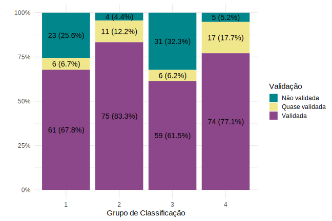

Capítulo 6 Análise descritiva
A análise descritiva do projeto foi dividida em duas partes. A seguir, apresentamos alguns gráficos e tabelas juntamente com interpretações retiradas das volumetrias vistas. Ao final, discutimos uma idéia de análise de concordância envolvendo os falantes e a classificação tônica das pseudopalavras.
6.1 Perfil dos participantes
6.1.1 Sexo e idade
Os 34 participantes do estudo estão divididos entre 21 mulheres e 13 homens, com idades que variam entre 18 e 60 anos. A Figura @ref(fig:idade_genero) mostra a distribuição dos respondentes segundo a faixa etária e gênero. A faixa etária foi dividida a partir dos quartis da variável idade, para resumir as informações da amostra. Com exceção da faixa etária de 31 a 38 anos, há mais mulheres do que homens no experimento.
6.1.2 Naturalidade
A Tabela A.1 exibe o perfil dos informantes segundo sua naturalidade (variável agrupada em razão da baixa volumetria de indivíduos por UF). É possível perceber que a maior proporção (82%) dos participantes reside no estado de São Paulo, portanto, essa variável não será considerada na análise.
6.1.3 Área de formação
Parte considerável dos participantes (11) são ingressantes do curso de Letras, logo, essa variável foi categorizada em dois níveis. A Tabela A.2 mostra esse agrupamento da formação dos voluntários. A influência do curso de Letras na categorização das pseudopalavras é um dos fatores de possível interesse na análise dos dados.
Analisando a distribuição por formação (Tabela A.3), 19 (55,9%) participantes são de outras áreas e 15 (44,1%) são da área de Letras; no entanto, cruzando essa variável com as informações de escolaridade, notamos que o grupo majoritário são estudantes de Letras com Ensino Superior Incompleto (11 pessoas,o que representa 32,4% do total). Também destacamos que a amostra a nível de indivíduos é pequena e possivelmente não representativa da população brasileira, pois apenas um indivíduo tem nível de escolaridade abaixo do universitário.
Outras variáveis relacionadas à linguagem (línguas e música) também foram transformadas em variáveis binárias, pois há interesse em entender se o conhecimento nessas áreas afeta a percepção da tonicidade de palavras. A distribuição das variáveis já agrupadas também pode ser observada nas Tabelas A.4 e A.5, respectivamente.
Observamos no Gráfico @ref(fig:area_linguas) que, dos participantes que têm conhecimento de outras línguas, mais de metade (57,7%) são do curso de Letras, e todas as pessoas sem nenhum conhecimento de outro idioma são de outras áreas. Isso pode levar a um confundimento do efeito dessas duas variáveis, pois não há nenhum indivíduo que curse Letras sem conhecimento de outras línguas no estudo.
6.2 Variáveis linguísticas
A tonicidade de produção (classificação da pseudopalavra) do tipo proparoxítona é a menos expressiva na base (4%), enquanto a categoria paroxítona aparece com maior frequência nas respostas dos participantes (57%), como visto na Tabela 6.1 a seguir. Portanto, o processo de acentuação das pseudopalavras nesse estudo parece ir de acordo com a afirmação de COLLISCHONN (1999) de que
Podemos considerar que o acento proparoxítono é marcado, no sentido de que é menos usual. É um acento especial, contrário à tendência geral de acentuar a penúltima sílaba.
| Tonicidade de produção | Total |
|---|---|
| oxítona | 4904 (39%) |
| paroxítona | 7163 (57%) |
| proparoxítona | 444 (4%) |
De forma geral, comparando a tonicidade da produção e a tonicidade das palavras-alvo (vide Tabela 6.2), nota-se que aproximadamente 73% das pseudopalavras classificadas como proparoxítonas tinham uma palavra-alvo de tonicidade proparoxítona. Entretanto, cerca de 77% das pseudopalavras que têm como alvo uma palavra proparoxítona foram categorizadas pelos participantes como paroxítonas (Tabela A.6).
Além disso, nota-se também que pseudopalavras originadas de palavras-alvo oxítonas e paroxítonas foram acentuadas de forma razoavelmente uniforme entre oxítonas e paroxítonas, o que não ocorre com as pseudopalavras criadas a partir de palavras-alvo proparoxítonas. Logo, pode-se pensar que pseudopalavras derivadas de proparoxítonas não tendem a ser acentuadas com a mesma tonicidade da palavra-alvo (11,4%), enquanto pseudopalavras lidas como proparoxítonas tendem a ser derivadas de proparoxítonas (73%).
| Tonicidade produção | oxítona | paroxítona | proparoxítona | Total |
|---|---|---|---|---|
| oxítona | 2642 (53.9%) | 1939 (39.5%) | 323 (6.6%) | 4904 (100.0%) |
| paroxítona | 2154 (30.1%) | 2824 (39.4%) | 2185 (30.5%) | 7163 (100.0%) |
| proparoxítona | 49 (11.0%) | 72 (16.2%) | 323 (72.7%) | 444 (100.0%) |
Observa-se na Tabela A.7 que os grupos de classificação 2 e 4 (ou seja, os grupos em que as palavras sofreram mais alterações em relação à referência original) apresentam uma proporção menor de proparoxítonas produzidas quando comparados aos grupos 1 e 3.
O fluxo entre tonicidade da palavra-alvo e tonicidade da produção pode ser analisado graficamente por grupo de classificação na Figura 6.1.

Figura 6.1: Tonicidade de palavra-alvo e pseudopalavra
No geral, podemos ver que há um “confundimento” entre oxítonas e paroxítonas em todos os grupos de classificação, ou seja, muitas pseudopalavras cuja palavra de referência é paroxítona foram classificadas pelos falantes como oxítonas, e vice-versa.
Consegue-se perceber que nos grupos de baixa frequência, a quantidade de pseudopalavras que foram classificadas como oxítona e cuja tonicidade da palavra-alvo era proparoxítona é consideravelmente maior do que nos grupos de alta frequência. Supomos que o fato de a palavra ser de baixa frequência faz com que seja mais dificil ter uma referência na mesma estrutura. Além disso, para os grupos dissimilares a quantidade de pseudopalavras acentuadas como proparoxítonas é ainda menor do que nos grupos similares, o que pode concorda com a hipótese de que quando o falante perde a referência de uma palavra real, ele acaba acentuando-a de acordo com um padrão, que seria o paroxítono. Cada um dos gráficos de fluxo pode ser visto detalhadamente no Apêndice B-Gráficos.
Na Tabela 6.3, vemos que 85% das pseudopalavras cuja estrutura era CV-CV-CV foram classificadas como paroxítonas, e 79% das pseudopalavras cuja estrutura era CV-CV-CVC foram classificadas como oxítonas, o que corrobora com a afirmação da literatura de que uma palavra típica da língua portuguesa é formada por sílabas CV e com a tonicidade recaindo na penúltima sílaba (paroxítona), uma vez que o padrão silábico canônico do português é CV e o padrão tônico é o paroxítono. Logo, parece existir forte influência da estrutura na atribuição da tonicidade em palavras do português brasileiro.
| Tonicidade produção | CV-CV-CV | CV-CV-CVC | Total |
|---|---|---|---|
| oxítona | 748 (10.3%) | 4156 (79%) | 4904 (39%) |
| paroxítona | 6200 (85.3%) | 963 (18%) | 7163 (57%) |
| proparoxítona | 323 (4.4%) | 121 (2%) | 444 (4%) |
| Total | 7271 (100.0%) | 5240 (100%) | 12511 (100%) |
Por fim, explorando os dados no âmbito de validação, vemos, na Tabela 6.4, que aproximadamente 73% das pseudopalavras foram validadas de acordo com o processo descrito anteriormente no capítulo 4 (Descrição).
| Tonicidade produção | Não Validada | Quase Validada | Validada |
|---|---|---|---|
| oxítona | 335 (15.8%) | 529 (39.2%) | 4040 (44.7%) |
| paroxítona | 1727 (81.5%) | 771 (57.2%) | 4665 (51.6%) |
| proparoxítona | 56 (2.6%) | 48 (3.6%) | 340 (3.8%) |
| Total | 2118 (100.0%) | 1348 (100.0%) | 9045 (100.0%) |
Cerca de 81% das pseudolavras cuja similaridade/dissimilaridade não foi validada foram classificadas como paroxítonas. Dentre as não validadas, aproximadamente 85% das pseudopalavras pertencem ao grupo das similares (??. Ou seja, percebe-se que nos grupos 1 (pseudopalavras similares de alta frequência) e 3 (pseudopalavras similares de baixa frequência) a porcentagem de palavras não validadas é superior aos demais grupos, o que parece indicar que a validação de palavras similares é mais complexa e difícil, uma vez que pseudopalavras classificadas como similares a palavra-alvo podem ser associadas a mais de uma palavra real pelos falantes.

6.3 Análise de Concordância
Como nossa base de dados está no formato de medidas repetidas (falantes acentuando diversas pseudopalavras) e uma mesma palavra-alvo gerou diversas pseupalavras, o pressuposto de independência entre as observações não é verdadeiro. Logo, optamos por medir a concordância entre a acentuação dos falantes através de uma Estatística do tipo Kappa, separando as análises em cada nível das seguintes variáveis: Grupo de Classificação, Estrutura da palavra e Segmento Modificado.
Busca-se investigar o grau de concordância entre os falantes quanto a classificação das 372 pseudopalavras em oxítona, paroxítona e proparoxítona. Como os níveis da variável resposta (tonicidade da produção) têm uma distribuição desbalanceada, houve a necessidade de utilizar um fator corretor no cálculo da estatística Kappa. Assim, para esse conjunto de dados, foi adotado a estatística de Gwet, medida que, de acordo com a literatura, pode ser utilizada em amostras desbalanceadas.
AC1 de Gwet: Coeficiente para n experimentos com r avaliadores que utilizam um sistema de classificação em Q categorias
\[ AC1 = \frac{p_a - p_{e\gamma}}{1-p_{e\gamma}} \] com
\[ p_a = \frac{1}{n}\sum^n_{i=1}(\sum^Q_{q=1}\frac{r_{iq}(r_{iq}-1)}{r-1}) \]
\[p_{e\gamma} = \frac{1}{Q-1}\sum^Q_{q=1}\pi_q(1-\pi_q) \]
\[ \pi_q = \frac{1}{n}\sum^n_{i=1}\frac{r_{iq}}{r} \]
Temos que
\(p_{e\gamma}\) = probabilidade de concordância ao acaso
\(p_a\) = probabilidade de concordância geral
\(\pi_q\) = probabilidade de classificação na categoria q
Quanto mais próximo de 1 menor a probabilidade de a concordância acontecer devido ao acaso, ou seja, melhor a concordância entre os falantes na classificação das pseudopalavras. Altman, DG (1991) define os seguintes pontos de corte para a interpretação da estatística Kappa (e, consequentemente, do AC1)
| AC1 < 0,20 | pobre |
| 0,2 <= AC1 < 0,4 | razoável |
| 0,4 <= AC1 < 0,6 | moderada |
| 0,6 <= AC1 < 0,8 | boa |
| AC1 >= 0,8 | muito boa |
Além da estimação da medida geral (sem segmentar a base de acordo com alguma característica), separou-se as pseudopalavras em cada uma das categorias da variável escolhida e calculou-se a medida AC1 de concordância em cada um dos níveis.
Observando o resultado da medida sem abertura dos níveis (vide Tabela 6.6), os falantes apresentaram uma concordância boa na atribuição do acento tônico pois a estatística de Gwet produziu um coeficiente de, aproximadamente, 0.68.
| Estatística | Valor da Estatística |
|---|---|
| Gwet’s AC1 | 0.6775543 |
Já na Tabela 6.7,vemos que há semelhança de concordância entre os grupos similares e dissimilares, sendo nas dissimilares os maiores níveis de concordância (0.75 e 0.71). Porém em todos os casos pode se considerar que a concordância foi boa.
Uma hipótese para o fato de os falantes concordarem mais nos grupos dissimilares seria de que quanto menos referência entre a pseudopalavra e uma palavra real, maior a chance de o falante utilizar outra característica para definir a tonicidade (como por exemplo a estrutura da palavra).
| Grupo de classificação | Valor da Estatística |
|---|---|
| Grupo 1 | 0.6641838 |
| Grupo 2 | 0.7549719 |
| Grupo 3 | 0.5874817 |
| Grupo 4 | 0.7063545 |
Em relação a estrutura da palavra, há uma maior concordância nas respostas dos falantes cujas pseudopalavras estão no nível CV-CV-CV, como visto na ??. Dado que dentro da estrutura CV-CV-CV 85% das pseudopalavras nesse nível foram classificadas como paroxítonas, parece existir uma concordância alta entre os falantes de seguirem essa tonicidade.
| Estrutura da palavra | Valor da Estatística |
|---|---|
| CV-CV-CVC | 0.6582021 |
| CV-CV-CV | 0.7626996 |
Por fim, em relação ao segmento modificado, vemos que há semelhança na medida de concordância entre os dois níveis de mudança (0.67 e 0.68). Ou seja, os falantes concordam na tonicidade da produção de forma muito parecida entre os dois níveis como visto na ??.
6.4 Resumo da Análise Descritiva
No geral, podemos ver que há um grande “confundimento” entre oxítonas e paroxítonas, além dos participantes acentuarem as pseudopalavras de forma paroxítona com bastante frequência. Logo, isso reforça a teoria de que o acento na penúltima sílaba é o padrão seguido pelos falantes do português brasileiro.
Além disso, dificilmente um falante acentua uma palavra desconhecida de forma proparoxítona e as volumetrias parecem ir ao encontro das teorias fonológicas de que se a palavra terminar em consoante o acento será oxítono e se terminar em vogal, o acento é paroxítono.
A análise de concordância parece indicar que as variáveis Grupo de classificação e Estrutura da palavra são importantes para a atribuição do acento tônico, visto que seus níveis apresentaram estatísticas de Gwet levemente diferentes entre si.
A partir desses resultados, serão desenvolvidos Modelos de Regressão Mistos Multinomiais com o falante como efeito aleatório, pois há interesse em analisar variáveis relacionadas aos indivíduos.